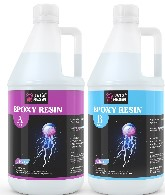
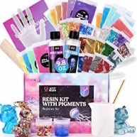

About what is used!
In picture one; This is the Resin that is used, when making the product's. Its a Part A and Part B. Both together is a 1-1 ratio.
All of the products that are maid they are maid with care and love. With that, they are also maid with a few different types of ingredients such as; Lets Resin (epoxy resin), colors; both Pigment powder and Liquid Alcohol ink, all different types of Glitter, many types of Figures, as well as Fairy Lights.
Who makes everything!
Everything is maid by hand. I make it all myself. Depending on how big the project is, depends on how long it takes me to comple the project. I send everything out via mail myself. I do my best to make everything to my customers satisfaction.